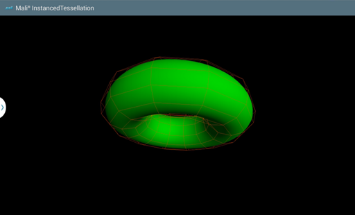
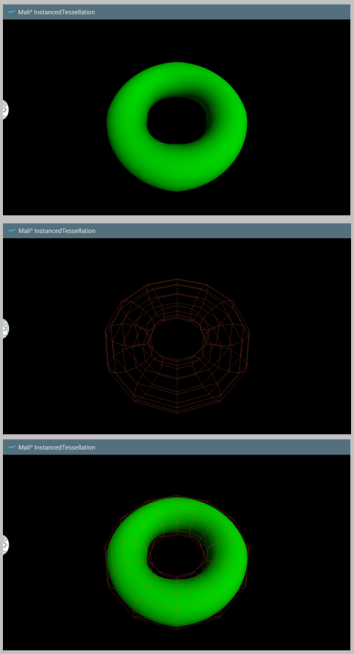

The application displays a rotating solid torus with a low-polygon wireframed mesh surrounding it. The torus is drawn by means of instanced tessellation technique using OpenGL ES 3.0.
Introduction
It's assumed that you have read and understood all of the mechanisms described in Asset Loading,Simple Triangle and Texture Cube.
Overview

The application displays a rotating solid torus with a low-polygon wireframed mesh surrounding it.
To perform instanced tessellation, we need to divide our model into several patches. Each patch is densely packed with triangles and improves the effect of round surfaces. In the first stage of tessellation, patches consist of vertices placed in a form of a square. Once passed to the shader, they are transformed into Bezier surfaces on the basis of control points stored in uniform blocks. Each instance of a draw call renders next part of the torus.
The following application instantiates two classes, these manage both the solid torus model and the wireframe that surrounds it. The first class is responsible for configuration of a program with shaders capable of instanced drawing, initialization of data buffers and handling instanced draw calls. To simplify the mathematics and satisfy conditions for C1 continuity between patches, we assume that torus is constructed by 12 circles, each also defined by 12 points. In that manner, we are able to divide "big" and "small" circle of torus into four quadrants and build Bezier surfaces that approximate perfectly round shapes. For that purpose, the control points cannot lay on the surface of the torus, but have to be distorted as appropriate.
The second class manages components corresponding to the wireframe. It uses vertices placed on the surface of torus and uses a simple draw call with GL_LINES mode. The size of its "small circle" is slightly bigger than the corresponding dimension of the solid torus, so there is a space between both the models.
Common elements for both classes are placed in an abstract Torus class.
Setup Graphics
First of all, we need to generate coordinates of the model that we will render. This is achieved in constructors of WireframeTorus and InstancedSolidTorus classes.
Please note that we wanted the wireframe object to be a little bit larger than the solid one, this is why the circleRadius is increased by distance. Thanks to that we will see a solid object which is surrounded by the wireframe object.
The coordinates are generated in the same way for both models as shown below
void TorusModel::generateVertices(
float torusRadius,
float circleRadius,
unsigned int circlesCount,
unsigned int pointsPerCircleCount,
float*
vertices)
{
if (vertices == NULL)
{
LOGE(
"Cannot use null pointer while calculating torus vertices.");
return;
}
unsigned int componentIndex = 0;
for (unsigned int horizontalIndex = 0; horizontalIndex < circlesCount; ++horizontalIndex)
{
float xyAngle = (
float) horizontalIndex * 2.0f *
M_PI / circlesCount;
for (unsigned int verticalIndex = 0; verticalIndex < pointsPerCircleCount; ++verticalIndex)
{
float theta = (
float) verticalIndex * 2.0f *
M_PI / pointsPerCircleCount;
vertices[componentIndex++] = (torusRadius + circleRadius * cosf(theta)) * cosf(xyAngle);
vertices[componentIndex++] = circleRadius * sinf(theta);
vertices[componentIndex++] = (torusRadius + circleRadius * cosf(theta)) * sinf(xyAngle);
vertices[componentIndex++] = 1.0f;
}
}
}
There are separate program objects that are used while rendering a requested model. There is no lighting applied on the wireframe model nor complicated vertex translations which makes things much easier. Please look at the shaders that are used while rendering the wireframe model.
Vertex shader source for the wireframe torus
1 /* Input vertex coordinates. */
4 /* Constant transformation matrices. */
5 uniform mat4 cameraMatrix;
6 uniform mat4 projectionMatrix;
7 uniform mat4 scaleMatrix;
9 /* Coefficients of rotation needed for configuration of rotation matrix. */
10 uniform vec3 rotationVector;
15 mat4 modelViewProjectionMatrix;
17 /* Matrix rotating Model-View matrix around X axis. */
18 mat4 xRotationMatrix = mat4(1.0, 0.0, 0.0, 0.0,
19 0.0, cos(radians(rotationVector.x)), sin(radians(rotationVector.x)), 0.0,
20 0.0, -sin(radians(rotationVector.x)), cos(radians(rotationVector.x)), 0.0,
23 /* Matrix rotating Model-View matrix around Y axis. */
24 mat4 yRotationMatrix = mat4( cos(radians(rotationVector.y)), 0.0, -sin(radians(rotationVector.y)), 0.0,
26 sin(radians(rotationVector.y)), 0.0, cos(radians(rotationVector.y)), 0.0,
29 /* Matrix rotating Model-View matrix around Z axis. */
30 mat4 zRotationMatrix = mat4( cos(radians(rotationVector.z)), sin(radians(rotationVector.z)), 0.0, 0.0,
31 -sin(radians(rotationVector.z)), cos(radians(rotationVector.z)), 0.0, 0.0,
35 /* Model-View matrix transformations. */
36 modelViewMatrix = scaleMatrix;
37 modelViewMatrix = xRotationMatrix * modelViewMatrix;
38 modelViewMatrix = yRotationMatrix * modelViewMatrix;
39 modelViewMatrix = zRotationMatrix * modelViewMatrix;
40 modelViewMatrix = cameraMatrix * modelViewMatrix;
42 /* Configure Model-View-ProjectionMatrix. */
43 modelViewProjectionMatrix = projectionMatrix * modelViewMatrix;
45 /* Set vertex position in Model-View-Projection space. */
46 gl_Position = modelViewProjectionMatrix * position;
Fragment shader source for the wireframe torus
1 precision mediump float;
If we now would like to render the wireframe torus on the screen, it's enough to issue the glDrawElements() call using GL_LINES mode. Of course there should be a proper program object and vertex array object used.
{
GL_CHECK(glUniform3fv(rotationVectorLocation, 1, rotationVector));
}
Please look into the shader objects that we are using to render the solid torus. The situation here is more complicated as there is some lighting applied and instanced drawing technique with vertices transformed into Bezier surface is issued.
Vertex shader source for the solid torus
1 /* Number of control points in one dimension for a patch.. */
2 const uint patchDimension = 4u;
3 /* Total number of control points in a patch. */
4 const uint controlPointsPerPatchCount = patchDimension * patchDimension;
5 /* Number of quads in a patch. */
6 const uint quadsInPatchCount = (patchDimension - 1u) * (patchDimension - 1u);
7 /* Total number of vertices in a patch. */
8 const uint verticesCount = 144u;
10 /* Input patch vertex coordinates. */
11 in vec2 patchUVPosition;
13 /* Constant transofrmation matrices. */
14 uniform mat4 cameraMatrix;
15 uniform mat4 projectionMatrix;
16 uniform mat4 scaleMatrix;
18 /* Coefficients of rotation needed for configuration of rotation matrix. */
19 uniform vec3 rotationVector;
21 /* Uniform block that stores control mesh indices. */
22 uniform ControlPointsIndices
24 uint indices[controlPointsPerPatchCount * verticesCount / quadsInPatchCount];
27 /* Uniform block that stores control mesh vertices. */
28 uniform ControlPointsVertices
30 vec4 vertices[verticesCount];
33 /* Normal vector set in Model-View-Projection space. */
34 out vec3 modelViewProjectionNormalVector;
38 const float pi = 3.14159265358979323846;
41 mat4 modelViewProjectionMatrix;
43 /* Array storing control vertices of current patch. */
44 vec4 controlVertices[controlPointsPerPatchCount];
46 /* Initialize array of current control vertices. */
47 for (uint i = 0u; i < controlPointsPerPatchCount; ++i)
49 controlVertices[i] = vertices[indices[uint(gl_InstanceID) * controlPointsPerPatchCount + i]];
52 /* Coefficients of Bernstein polynomials. */
53 vec2 bernsteinUV0 = (1.0 - patchUVPosition) * (1.0 - patchUVPosition) * (1.0 - patchUVPosition);
54 vec2 bernsteinUV1 = 3.0 * patchUVPosition * (1.0 - patchUVPosition) * (1.0 - patchUVPosition);
55 vec2 bernsteinUV2 = 3.0 * patchUVPosition * patchUVPosition * (1.0 - patchUVPosition);
56 vec2 bernsteinUV3 = patchUVPosition * patchUVPosition * patchUVPosition ;
58 /* Position of a patch vertex on Bezier surface. */
59 vec3 position = bernsteinUV0.x * (bernsteinUV0.y * controlVertices[ 0].xyz + bernsteinUV1.y * controlVertices[ 1].xyz + bernsteinUV2.y * controlVertices[ 2].xyz + bernsteinUV3.y * controlVertices[ 3].xyz) +
60 bernsteinUV1.x * (bernsteinUV0.y * controlVertices[ 4].xyz + bernsteinUV1.y * controlVertices[ 5].xyz + bernsteinUV2.y * controlVertices[ 6].xyz + bernsteinUV3.y * controlVertices[ 7].xyz) +
61 bernsteinUV2.x * (bernsteinUV0.y * controlVertices[ 8].xyz + bernsteinUV1.y * controlVertices[ 9].xyz + bernsteinUV2.y * controlVertices[10].xyz + bernsteinUV3.y * controlVertices[11].xyz) +
62 bernsteinUV3.x * (bernsteinUV0.y * controlVertices[12].xyz + bernsteinUV1.y * controlVertices[13].xyz + bernsteinUV2.y * controlVertices[14].xyz + bernsteinUV3.y * controlVertices[15].xyz);
64 /* Matrix rotating Model-View matrix around X axis. */
65 mat4 xRotationMatrix = mat4(1.0, 0.0, 0.0, 0.0,
66 0.0, cos(radians(rotationVector.x)), sin(radians(rotationVector.x)), 0.0,
67 0.0, -sin(radians(rotationVector.x)), cos(radians(rotationVector.x)), 0.0,
70 /* Matrix rotating Model-View matrix around Y axis. */
71 mat4 yRotationMatrix = mat4( cos(radians(rotationVector.y)), 0.0, -sin(radians(rotationVector.y)), 0.0,
73 sin(radians(rotationVector.y)), 0.0, cos(radians(rotationVector.y)), 0.0,
76 /* Matrix rotating Model-View matrix around Z axis. */
77 mat4 zRotationMatrix = mat4( cos(radians(rotationVector.z)), sin(radians(rotationVector.z)), 0.0, 0.0,
78 -sin(radians(rotationVector.z)), cos(radians(rotationVector.z)), 0.0, 0.0,
82 /* Model-View matrix transformations. */
83 modelViewMatrix = scaleMatrix;
84 modelViewMatrix = xRotationMatrix * modelViewMatrix;
85 modelViewMatrix = yRotationMatrix * modelViewMatrix;
86 modelViewMatrix = zRotationMatrix * modelViewMatrix;
87 modelViewMatrix = cameraMatrix * modelViewMatrix;
89 /* Configure Model-View-ProjectionMatrix. */
90 modelViewProjectionMatrix = projectionMatrix * modelViewMatrix;
92 /* Set vertex position in Model-View-Projection space. */
93 gl_Position = modelViewProjectionMatrix * vec4(position, 1.0);
95 /* Angle on the "big circle" of torus. */
96 float phi = (patchUVPosition.x + mod(float(gl_InstanceID), 4.0)) * pi / 2.0;
98 /* Angle on the "small circle" of torus. */
99 float theta = (patchUVPosition.y + mod(float(gl_InstanceID / 4), 4.0)) * pi / 2.0;
101 /* Horizontal tangent to torus. */
102 vec3 dBdu = vec3(-sin(phi), 0.0, cos(phi));
103 /* Vertical tangent to torus. */
104 vec3 dBdv = vec3(cos(phi) * (-sin(theta)), cos(theta), sin(phi) * (-sin(theta)));
106 /* Calculate normal vector. */
107 vec3 normalVector = normalize(cross(dBdu, dBdv));
108 /* Calculate normal matrix. */
109 mat3 normalMatrix = transpose(inverse(mat3x3(modelViewMatrix)));
111 /* Transform normal vector to Model-View-Projection space. */
112 modelViewProjectionNormalVector = normalize(normalMatrix * normalVector);
Fragment shader source for the solid torus
1 precision mediump float;
3 /* Input normal vector. */
4 in vec3 modelViewProjectionNormalVector;
6 /* Structure storing directional light parameters. */
11 float ambientIntensity;
14 /* Color of the drawn torus. */
16 /* Uniform representing light parameters. */
19 /* Output variable. */
24 /* Calculate the value of diffuse intensity. */
25 float diffuseIntensity = max(0.0, -dot(modelViewProjectionNormalVector, normalize(light.lightDirection)));
27 /* Calculate the output color value considering the light. */
28 fragColor = color * vec4(light.lightColor * (light.ambientIntensity + diffuseIntensity), 1.0);
If we now would like to render the solid torus on the screen, it's enough to issue the glDrawElementsInstanced() call using GL_TRIANGLES mode. Of course there should be proper program object and vertex array object used.
{
GLint rotationVectorLocation =
GL_CHECK(glGetUniformLocation(
programID,
"rotationVector"));
if (rotationVectorLocation != -1)
{
GL_CHECK(glUniform3fv(rotationVectorLocation, 1, rotationVector));
}
else
{
LOGE(
"Could not locate \"rotationVector\" uniform in program [%d]",
programID);
}
}
Result
We wanted the model to rotate, which is why we need to calculate a new rotation angle each frame. Once we have a rotation vector generated, it's used to update the vertices position for both: wireframe and solid torus.
The calculated values are then used while drawing the requested models.

The result model consists of both: wireframe and solid torus.